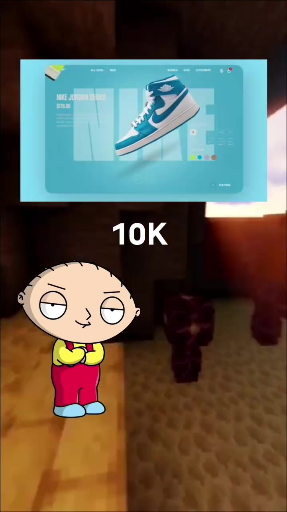
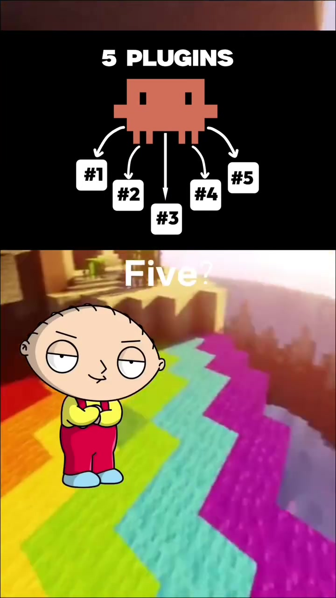
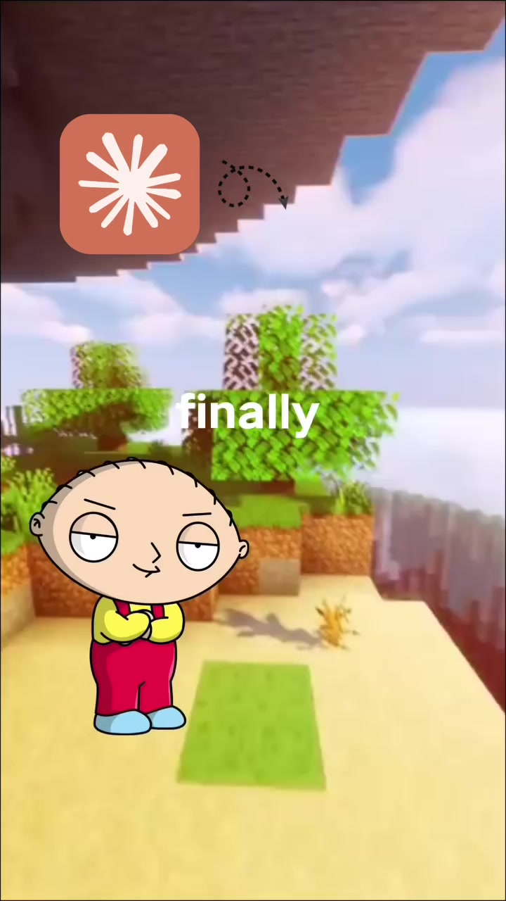

Frontend · Vibe-Coding
From 2006 HTML to $10K UI: 5 Essential Tools for Claude Code Vibe Coders
When beginners first prompt Claude Code to create a website, the output frequently resembles archaic 2006 HTML or generic purple neon gradients. Professional design engineers avoid this by equipping Claude with five targeted frontend extension libraries and design constraint skills that enforce modern typography, physics-based motion, and tailored design systems.
Visual Reference Stills



The 5 Essential Tools to Upgrade AI UI
Injects explicit aesthetic rules that prevent Claude from defaulting to generic centered AI boxes. Enforces asymmetric layouts, curated dark color palettes (tinted slate over pure black), and proper optical text tracking.
Replaces linear CSS transitions with spring physics. Gives buttons, cards, and modal dialogs responsive inertia, momentum, and interruptible state transitions.
Provides pre-built, copy-pasteable accessible components (Bento grids, background beams, tracing beams, glowing cards) that eliminate raw Tailwind boilerplate.
Enforces unified 24px stroke-width iconography across all buttons and alerts rather than letting the LLM invent broken ad-hoc SVGs.
Configures responsive fluid type scales using clamp() and Tailwind typography prose styles to ensure editorial readability across mobile viewports and large desktop monitors.